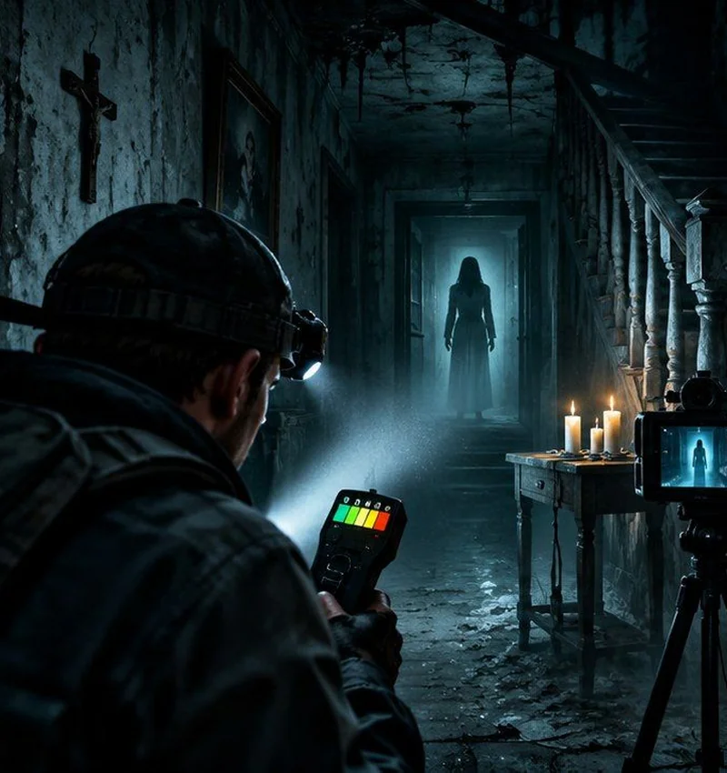
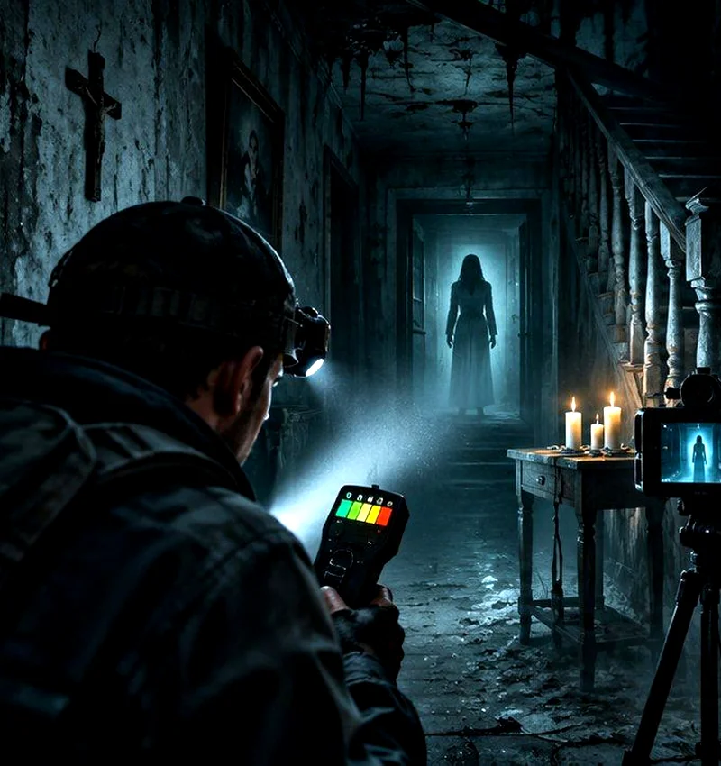
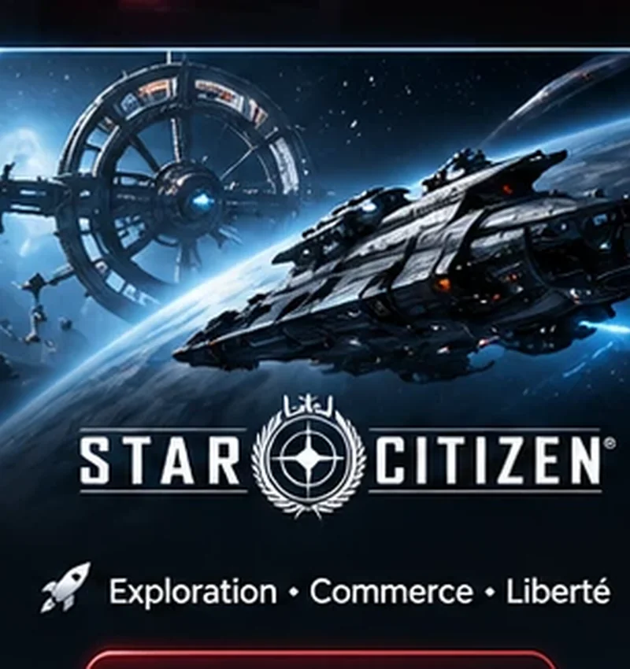

CRÉATRICE TWITCH
DamePiouPiou
Des jeux d’horreur, des moments chill et du multigaming ! Entre frissons, découvertes et bonne humeur, viens partager des lives variés dans une ambiance conviviale.
Salut, moi c’est Jack ! Ici, on explore des mondes, on se fait peur, on rigole et surtout on partage de bons moments ensemble. Du gaming, des découvertes et des discussions sans pression.
 UNIVERS 01 / 03
UNIVERS 01 / 03Explore les pièces, collecte des preuves et démasque le fantôme.
Choisis ton univers et lance une découverte.
Choisis une ambiance et découvre ce qui t'attend dans l'univers de Jack.

DÉCOUVRIR REAL JUST JACK
Des enquêtes qui font sursauter, des histoires à explorer et des voyages vers l'inconnu. Choisis ton prochain univers.
01 / HORREUR & ENQUÊTEPHASMOPHOBIADes fantômes, des frissons et quelques fous rires.ENTRER DANS L'ENQUÊTE ↗ 02 / FANTASY & EXPLORATIONWORLD OF WARCRAFTDes quêtes, des rencontres et des aventures en Azeroth.EXPLORER AZEROTH ↗
02 / FANTASY & EXPLORATIONWORLD OF WARCRAFTDes quêtes, des rencontres et des aventures en Azeroth.EXPLORER AZEROTH ↗ 03 / ESPACE & DÉCOUVERTESTAR CITIZENTransport, exploration et liberté au-delà des étoiles.PRENDRE SON ENVOL ↗
03 / ESPACE & DÉCOUVERTESTAR CITIZENTransport, exploration et liberté au-delà des étoiles.PRENDRE SON ENVOL ↗Vous développez ou éditez un jeu vidéo ? Présentez votre projet à Real Just Jack pour envisager une découverte en live, une vidéo ou un contenu court.
01 Découvrez les formats proposés
02 Rejoignez le salon Partenariats Gaming
03 Ouvrez un ticket privé avec votre proposition
Un compte Discord et l'accès au serveur sont nécessaires.Un aperçu de mon univers gaming. Clique sur un clip pour le découvrir sur TikTok.

REAL JUST JACK / TIKTOK▶PHASMOPHOBIA · MOMENT 01La tension monte…REGARDER SUR TIKTOK ↗
REAL JUST JACK / TIKTOK▶PHASMOPHOBIA · MOMENT 02Une enquête imprévisibleREGARDER SUR TIKTOK ↗
REAL JUST JACK / TIKTOK▶GAMING · MOMENT 03Les meilleurs moments de JackREGARDER SUR TIKTOK ↗Frissons, surprises et moments gaming : découvre mes vidéos verticales sur YouTube, depuis ma chaîne officielle.
▶ VOIR MES YOUTUBE SHORTS ↗Charge le lecteur et le chat Twitch ici. S’ils restent vides, ouvre Twitch directement.
Deux créatrices Twitch dont je te recommande les univers. Lance leur live ici, sans quitter le site.
Lance la sélection surprise pour découvrir un talent.
Des jeux d’horreur, des moments chill et du multigaming ! Entre frissons, découvertes et bonne humeur, viens partager des lives variés dans une ambiance conviviale.

Des lives autour du dessin et de la créativité, avec de temps en temps des sessions de jeux vidéo. Un rendez-vous pour découvrir son univers.
Accomplis des missions, débloque des succès et progresse en explorant les univers. Tout est gratuit et sauvegardé sur cet appareil.
Les missions sont validées en réalisant des actions sur ce site. Une fois terminées, elles se renouvellent demain.
Les succès débloqués restent enregistrés dans ce navigateur.
Un espace à explorer à ton rythme. Chaque carte ouvre une vraie expérience interactive.
Laisse le hasard choisir ton prochain univers et ouvre-le en un clic.
Teste ta culture gaming. Une nouvelle question à chaque partie.
0 bonne réponseGarde tes univers préférés sous la main. Sans compte et sans inscription.
Retrouve les lives, les vidéos et les autres aventuriers. Entre dans la communauté de Jack.
Explore les univers de Jack : sélectionne un portail, fais pivoter la scène et découvre une destination unique.
Analyse les indices et identifie les entités dans le laboratoire interactif.
Sur ordinateur, déplace ta souris sur le portail pour explorer sa profondeur.
Chaque jeu change la couleur du site. Passe la souris sur une carte.
Sélectionne les preuves, élimine les suspects et lis l’astuce de chaque entité.
Ouvrir le labo ↗ WORLD OF WARCRAFT9 donjons et 6 raids, avec leurs boss, consultables et filtrables.
Explorer Midnight ↗ Partenariats GamingDes parties intenses, des moments d’équipe et le chat en renfort.
Voir les clips ↗ STAR CITIZENExploration spatiale en direct, avec le chat à bord.
Voir les lives ↗Explore trois pièces. Active les instruments pour révéler des indices, puis utilise le laboratoire des preuves juste en dessous.
Un courant d'air froid traverse l'entrée. Quelque chose t'observe.
Un clic sur une preuve la marque « trouvée », un deuxième « exclue ». Clique un fantôme pour lire son astuce.
Voici ses trois preuves. Choisis le bon fantôme.
Choisis une destination, découvre son histoire et prépare ta prochaine expédition. Une carte d'ambiance originale, pas une carte officielle du jeu.
Une forêt ancienne où les branches semblent raconter des légendes oubliées.
0 destination explorée sur 4
Consulter les donjons et raids ↓Frissons, fails et aventures : choisis une ambiance pour découvrir mes contenus sur les plateformes officielles.
Retrouve les extraits, les annonces et la communauté sur mes réseaux.
Le Discord est ouvert sur candidature. Prépare ton message ici, puis colle-le sur le serveur.
Le message ne part pas tout seul : tu l’envoies toi-même sur Discord.
Nouveau · Missions narratives
Explore des lieux, découvre des indices, prends des décisions et débloque une fin. Chaque aventure se sauvegarde sur ton appareil.
NOUVEAU · 4 EXPÉRIENCES JOUABLES
Enquête paranormale, aventure en Azeroth, opération tactique et mission spatiale : chaque univers possède ses propres choix, événements et fins. Progression sauvegardée sur ton appareil.
QUARTIER GÉNÉRAL · EXPLORATION
Trois univers, quatre défis gratuits : chaque clic ouvre une véritable mission. Ton niveau et tes succès sont mémorisés dans ce navigateur. Aucune inscription nécessaire.
LE COIN DES EXPLORATEURS
Découvre mes univers, apprends à mieux connaître les jeux et relève des défis accessibles gratuitement.